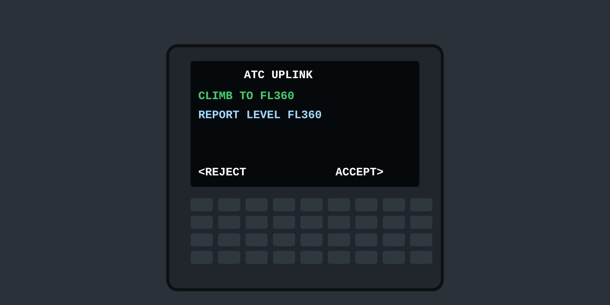

Lesson 05: Using the CMU-900 on the Boeing 737-800
Lesson 5 of 6 · about 7 min
Learning objectives
Navigate the main CPDLC pages of the CMU-900 on the CDU.
Respond to uplinked messages.
Use the ATC log and the reports and requests pages.

On the B737-800, CPDLC runs through the CMU-900 on the CDU.
The application
On our Boeing 737-800, the CMU-900 CPDLC application allows digital communication between the aircraft and an ATC centre through the Aeronautical Telecommunication Network (ATN), using the CDU.
LOGON/STATUS page — initiates the logon to a specified ATS facility and displays the data link status.
REPORTS/REQUESTS menu — creates downlink requests: altitude, speed or direct (REQ ALT/SPD/DIR), weather deviation (REQ WX DEV) and facility monitoring (MONITORING).
ATC LOG — lists all uplinks and downlinks sent and received.
Receiving a message
When an uplink is received, a Hi/Lo chime sounds and •ATC MSG appears at LSK 6R on the CDU. The prompt remains while any uplink is pending.
Open the message, read it in full, and cross-check it with the other pilot.
Respond with the appropriate prompt: WILCO, STANDBY, AFFIRM, UNABLE, ROGER or NEGATIVE.
Selecting STANDBY sends a downlink and restarts the alert timer; the message is not closed until another response is sent. Selecting ROGER after STANDBY replaces STANDBY with ACCEPTED, and the message is completed.
ATC log
Shows, for each message: uplink or downlink, time, source, tracking number, status and the first 22 characters of the text.
Select the message text to display the complete message with its response.
Status annunciations show whether a message is open, accepted, rejected, failed or timed out — check them when in doubt.
Dash 8 fleets
Q400 and Q200 crews: check whether your aircraft is CPDLC equipped. If not, this course gives awareness of CPDLC operations used by other traffic and ATC.
Button names and page layouts depend on the installed software — always use your FCOM.
Uplink: chime + •ATC MSG at LSK 6R; read in full, cross-check, then respond.
STANDBY keeps the dialogue open; check the status annunciations in the ATC log.
Knowledge check
On the CMU-900, how is the receipt of an uplink message indicated?
Master caution only
A Hi/Lo chime and •ATC MSG at LSK 6R on the CDU
A message on the PFD only
No indication
Answer: B. A Hi/Lo chime sounds and •ATC MSG is displayed at LSK 6R.
Training material only. It does not replace the Aircraft Flight Manual, FCOM, QRH, MEL or the Domestic Airlines Operations Manual, which always take precedence.